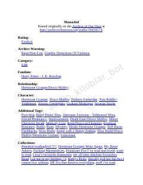

MVoldemort g'alaba qozongan dunyoda Germiona va Drako o'rtasidagi murakkab va qorong'u sevgi qissasi.
Garri Potter vafot etgan va Voldemort g'alaba qozongan muqobil olamda sodir bo'ladigan voqealar tasvirlanadi. Germiona Greyndjer sehrgarlar dunyosini qayta tiklash dasturi doirasida qul sifatida yuqori martabali amaldorga topshiriladi. Bu asar qorong'u mavzular, psixologik travma va murakkab munosabatlarni o'z ichiga olgan dramatik hikoyadir.